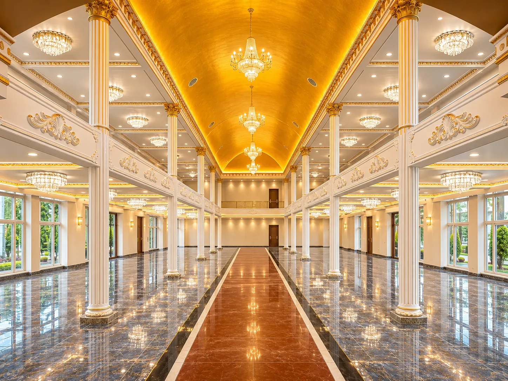
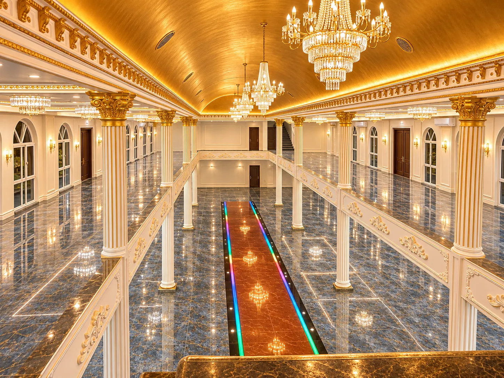
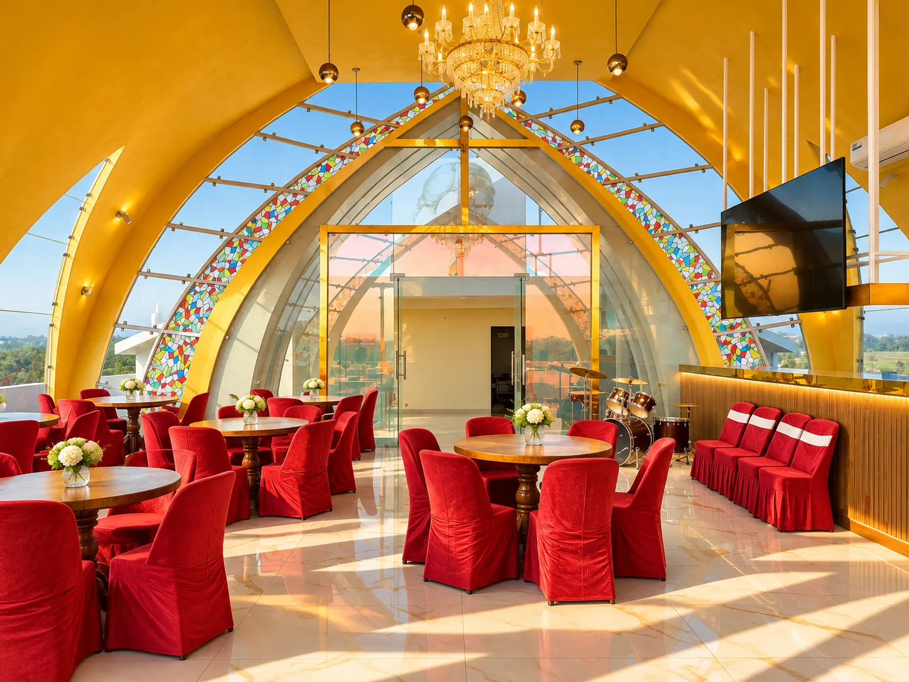
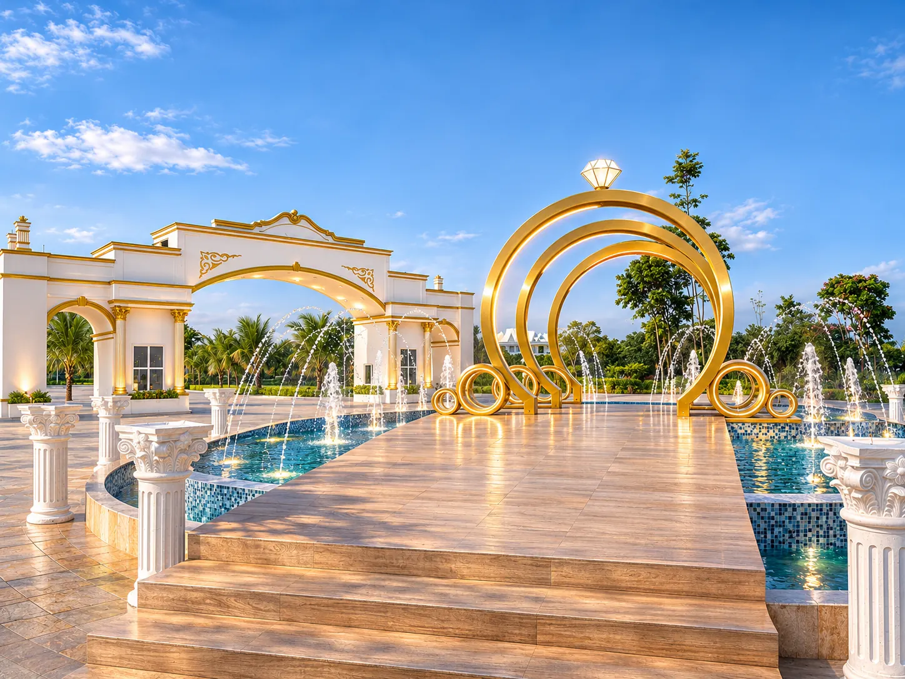
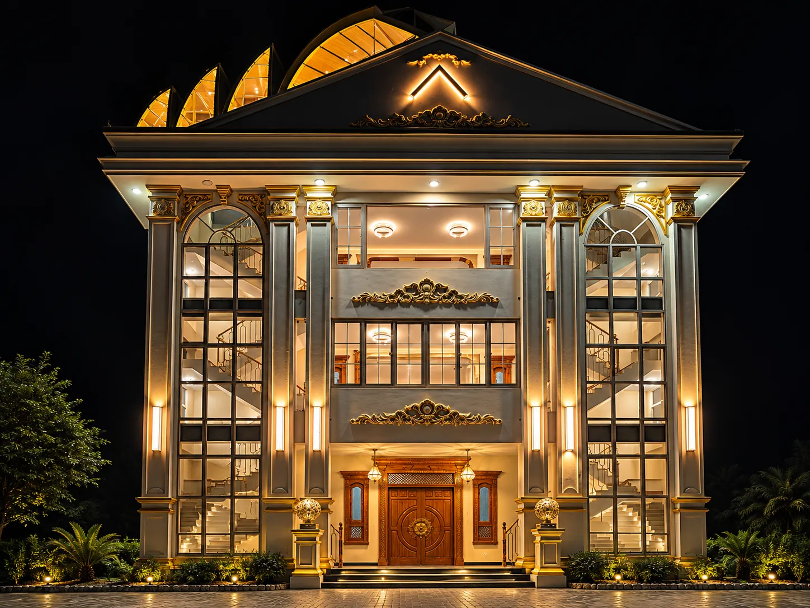
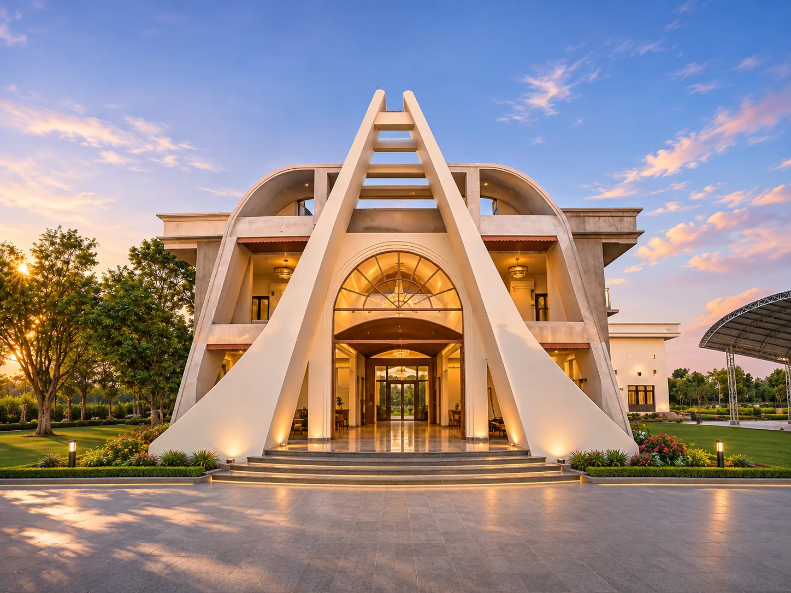
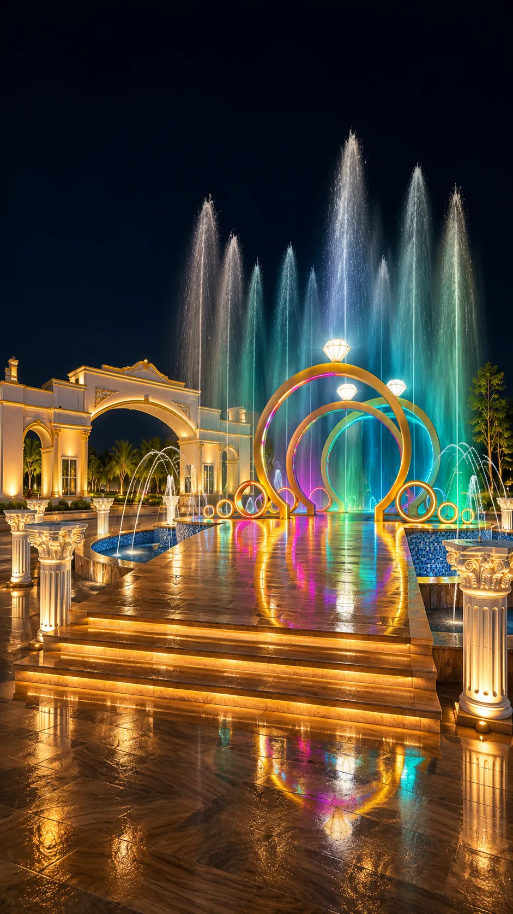
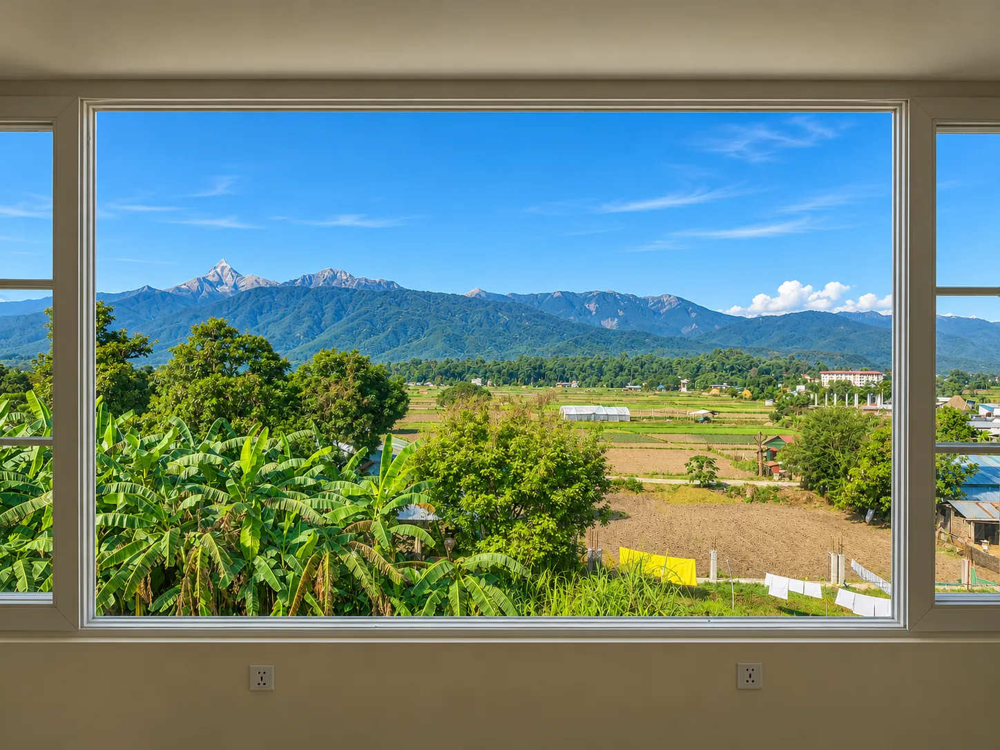

日照金山的光
金色陽光映照喜馬拉雅雪峰，象徵一生重要時刻的榮耀、祝福與光彩。
 GOLDEN HIMALPALACE · CHITWAN, NEPAL
GOLDEN HIMALPALACE · CHITWAN, NEPAL
THE GOLDEN HIMAL STORY
Golden Himal Palace 位於尼泊爾奇旺。金色宴會廳、特色建築、景觀空間與戶外水景，共同構成充滿記憶點的相聚場域。歡迎認識我們，也認識 Golden Himal Voice 2027。

Golden Himal 的靈感來自喜馬拉雅山峰映照金色陽光的景象。這個名字承載著對歡聚、重要時刻與美好體驗的想像。
金色陽光映照喜馬拉雅雪峰，象徵一生重要時刻的榮耀、祝福與光彩。
取自喜馬拉雅的山形意象，讓品牌與尼泊爾的土地、自然和文化相互呼應。
從 Plaza 更名為 Palace，以更貼切的名稱呈現婚宴殿堂與優雅接待空間的定位。
從金色宴會廳、景觀餐廳，到優雅夜景與戶外噴泉。以照片感受這片場域的色彩、光線和特色。







影像由現場照片進行 AI 修飾，包含人物移除與局部環境美化；部分外觀、燈光及細節為形象呈現，不代表目前所有空間已完工或可立即使用。
Golden Himal Voice 2027 邀請尼泊爾各地喜愛歌唱的人參與這場音樂盛會。了解比賽辦法與年度賽程，從這裡開始你的舞台旅程；實際比賽地點以正式公告為準。
探索 Golden Himal Voice 2027